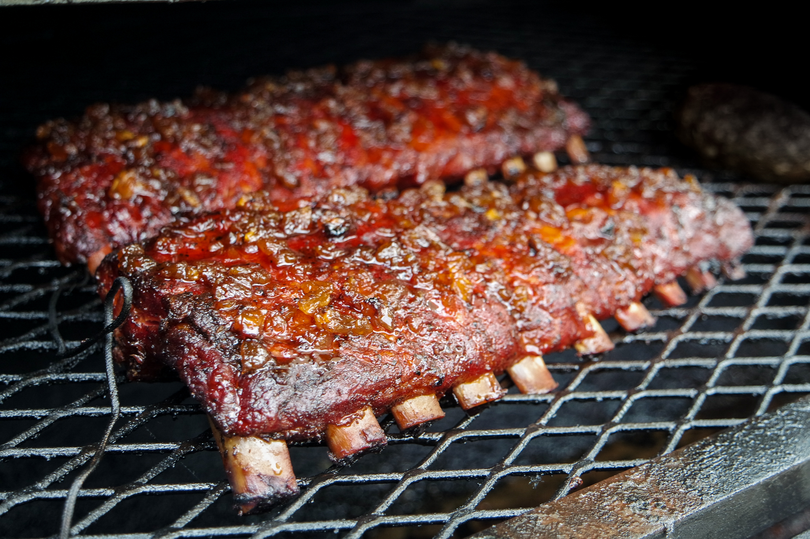

Smoked pork ribs are a flavorful and tender cut of pork, typically seasoned with a dry rub or marinade, then slow-cooked in a smoker over indirect heat using wood smoke for several hours. The smoking process infuses the meat with a rich, smoky flavor while breaking down connective tissues, resulting in juicy, fall-off-the-bone ribs.